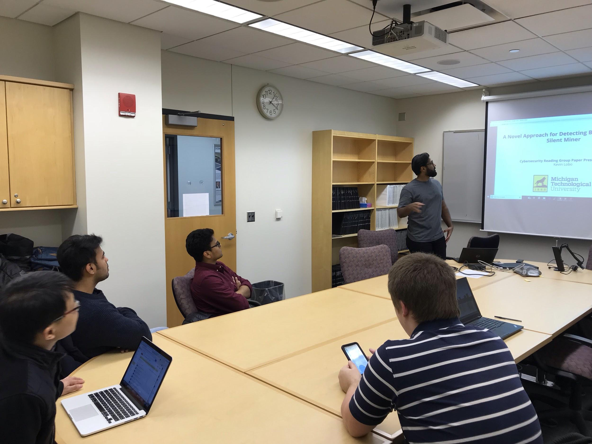
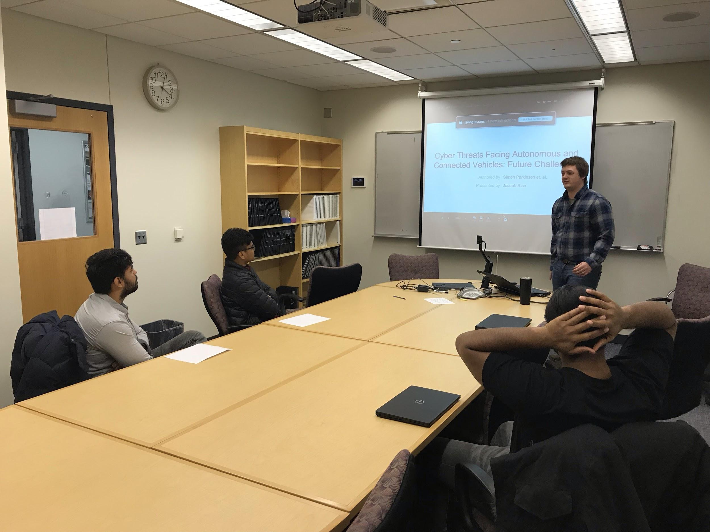

Spring 2019 CS Cyber Security Reading Group
Members: Abheek Srivastava, Bo Chen (co-advisor), Jean Mayo (co-advisor), Joseph Rice, Karan Sunchanakota, Kevin Lobo, Niusen Chen, Sandeep Battula, Siva Krishna Kakula, Vishnu Kamaraju


Detailed schedule:
Time: 4:00 – 5:00pm Friday, Feb. 15, 2019
Location: Rekhi 217
Presenter: Kevin Lobo
Title: SecureWeb: Protecting Sensitive Information Through the Web Browser Extension with a Sensitive Token
Abstract:
With the development of decentralized mechanism of blockchain, many cryptocurrencies based on blockchain have emerged, such as Bitcoin, Ethereum, Monroe, etc. Prices of Bitcoin have increased millions of times since its birth. At the same time, hackers have turned their attentions to cryptocurrencies and have used various means to acquire cryptocurrencies illegally. Current browsers such as IE, Chrome and Firefox can only detect mining behavior based on malicious URL blocking, but cannot cope with the silent mining behavior. To deal with this problem, this paper first proposes a novel browser-based silent miner detection method. Then a browser-based prototype system for detecting malicious mining behavior called BMDetector is designed which can detect and analyze homologous mining activities automatically. In the end, they demonstrate that BMDetector has a good user experience by evaluating their system’s performance.
Additionally, CS MS student Abheek Srivastava was invited to the reading group to share his co-op experience. Abheek did his co-op in 24G from Summer 2018 – Fall 2018 as a programmer. He involved in several projects during his intern. He mentioned four things which he thinks are the most important based on his own experience: 1) Learning by doing projects. 2) Good communications with teammates and managers. 3) Asking questions. 4) Networking.
Time: 4:00 – 5:00pm Friday, Mar. 1, 2019
Location: Rekhi 217
Presenter: Karan Sunchanakota
Title: Hey, You, Get Off of My Cloud: Exploring Information Leakage in Third-Party Compute Cloud
Abstract:
Since a cloud computing service allows users to purchase the service they need via a shared physical infrastructure, an attacker can legitimately be in the same physical machine with the users. This structure may lead to some information leakage of the user because it is possible to map the internal cloud infrastructure and identify where a particular target virtual machine is likely to reside, then the attacker can co-locate with the target and finally gather information about the target. The paper assumes that the attacker comes from a third party who can use cloud provider's service and the infrastructure provider and cloud insider is trustworthy. The paper uses Amazon EC2 as a case study to show how attacker can steal other users’ information in four steps, which are: 1) determining an instance's location in the cloud infrastructure; 2) using various heuristics to determine co-residence of two VMs; 3) launching instances that will be co-resident with the victim's instances; and 4) exploiting cross-VM information leakage. In the end, this paper proposes some countermeasures to mitigate this vulnerability. For example, cloud providers should obfuscate both the internal structure and placement policy to complicate an adversary's attempt to place a VM on the same physical machine, or employ blinding techniques to minimize the information that can be leaked.
Time: 4:00 – 5:00pm Friday, Mar. 22, 2019
Location: Rekhi 217
Presenter: Joseph Rice
Title: Cyber Threats Facing Autonomous and Connected Vehicles: Future Challenges
Abstract:
Vehicles are currently being developed and sold with increasing levels of connectivity and automation. Developing increasingly autonomous and connected vehicles inevitably requires an increase in computing resources. However, as with all connected computing infrastructures, increasing the level of computational functionality and connectivity increases the exposure of potential vulnerabilities, which can increase the likelihood of future attacks. This paper first provides an in-depth analysis of publicly available literature to identify cyber security related knowledge gaps. It then provides a table which allows readers to easily assess the current knowledge gaps and their significance. In the end, the paper provides a few suggestions on how those knowledge gaps can be resolved.
Time: 4:00 – 5:00pm Friday, April 11, 2019
Location: Rekhi 217
Presenter: Abheek Srivastava
Title: Trust Bit: Reward-based Intelligent Vehicle Communication using Blockchain
Abstract:
The Intelligent vehicle is experiencing revolutionary growth in research and industry, but it still suffers from a lot of security vulnerabilities. Traditional security methods are incapable of providing secure IV, mainly in terms of communication. In IV communication, major issues are trust and data accuracy of received and broadcasted reliable data in the communication channel. This paper proposes Trust Bit (TB) for IV communication among IVs using Blockchain technology. Trust Bit is a symbol of trustworthiness of vehicles behavior, and vehicles legal and illegal action. They also propose a reward system, which can exchange some TB among IVs. For the data management of this trust bit, they have used blockchain technology in the vehicular cloud, which can store all Trust bit details and can be accessed by IV anywhere and anytime.